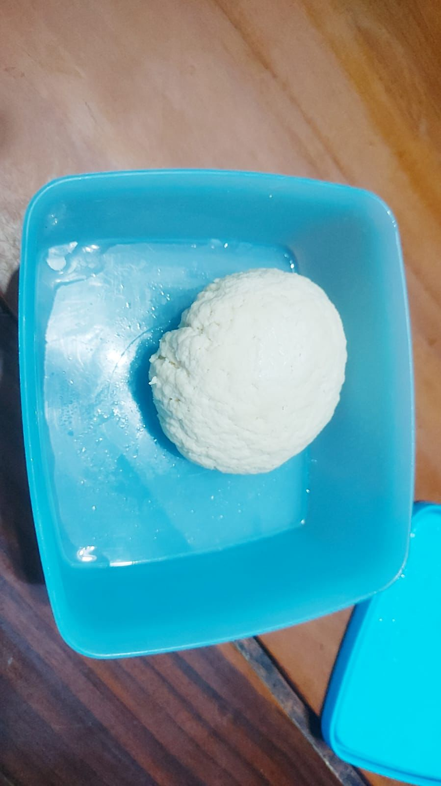

Refleksi Kelompok Agama
Keadaan alam di Indonesia saat ini sangatlah memprihatinkan. Banyak orang yang tidak bertanggung jawab sehingga menyebabkan banyak kerusakan alam. Contohnya; Pencemaran laut, pencemaran laut di Indonesia merupakan masalah serius yang berkaitan dengan berbagai faktor dan aktivitas manusia. Air laut yang tercemar oleh limbah industri, pertanian, dan domestik berkontribusi pada penurunan kualitas air laut dan merugikan ekosistem laut yang beragam. Sampah plastik yang berlebihan, yang seringkali tidak dikelola dengan baik, menciptakan masalah tambahan, mencemari perairan dan menyebabkan bahaya bagi kehidupan laut. Overfishing atau penangkapan ikan yang berlebihan mengancam sumber daya perikanan dan mengganggu keseimbangan ekosistem laut. Perubahan iklim juga memainkan peran penting dalam perubahan suhu laut dan gangguan ekosistem, sementara industri perikanan tertentu dan pembangunan pesisir yang tidak terkendali juga berkontribusi pada kerusakan laut. Untuk mengatasi masalah ini, langkah-langkah kritis termasuk pengelolaan limbah yang lebih ketat, regulasi perikanan berkelanjutan, edukasi lingkungan, dan kesadaran masyarakat akan pentingnya menjaga kelestarian ekosistem laut. Kerja sama internasional juga diperlukan untuk melindungi lautan dan keanekaragaman hayati di perairan Indonesia yang luas.
Kerusakan alam merupakan hasil dari berbagai aktivitas manusia yang berdampak negatif pada lingkungan dan ekosistem bumi. Salah satu contoh kerusakan alam yang mencolok adalah deforestasi yang disebabkan oleh penebangan hutan untuk kepentingan pertanian, industri, dan konstruksi. Selain itu, polusi udara dan air yang dihasilkan dari aktivitas industri, transportasi, dan pertanian turut merusak kualitas udara dan air, membahayakan organisme hidup dan kesehatan manusia. Penggunaan bahan kimia beracun seperti pestisida dan limbah plastik yang tidak terkelola juga menjadi penyebab kerusakan ekosistem dan keanekaragaman hayati. Solusi untuk mengatasi kerusakan alam melibatkan upaya konservasi, pengurangan emisi gas rumah kaca, praktik pertanian berkelanjutan, serta edukasi dan perubahan perilaku manusia untuk menjaga dan melestarikan lingkungan alam kita.
Kita sadari bahwa hubungan manusia dan alam ciptaan sebetulnya berkesinambungan. Semuanya saling memengaruhi. Jika alam ciptaan lestari dan terjaga oleh manusia, sudah pasti keberlangsungan hidup manusia akan terjaga. Kita tidak perlu khawatir akan kurangnya kebutuhan terhadap sumber daya, karena semuanya sudah tersedia dengan baik di alam. Namun, jika keadaan alam memprihatinkan, seperti terjadi kekeringan di mana-mana, penebangan pepohonan di hutan secara berlebihan yang kemudian berdampak pada pemanasan global, dan berbagai bentuk eksploitasi lainnya, sudah pasti akan mengganggu dan mengancam kehidupan manusia juga, seperti kurangnya hasil pangan akibat kekeringan yang mendunia.
Manusia merupakan ciptaan Allah yang paling mulia karena diciptakan segambar dan serupa dengan Allah. Selain itu, Allah juga memberikan anugerah khusus pada manusia berupa hati nurani, kebebasan, dan akal budi. Allah mengharapkan agar dengan karunia khusus tersebut, manusia mampu menjaga dan memelihara segala ciptaan-Nya yang ada di bumi ini sehingga keberadaannya tetap terjaga dan lestari. Oleh sebab itu, sudah menjadi kewajiban utama manusia untuk menjaga segala alam ciptaan Allah dengan penuh tanggung jawab. Melalui Kitab Kejadian 1:1-25, dapat kita ketahui bahwa kasih Allah begitu besar kepada manusia. Kasih ini terlihat dalam kisah penciptaan, di mana sebelum manusia ada, Allah telah menciptakan segala sesuatu yang diperlukan untuk kelangsungan hidup manusia, yaitu alam dan segala isinya dengan sungguh amat baik.
Menurut Kejadian 1:26-31, Allah berfirman, “Baiklah Kita menjadikan manusia menurut gambar dan rupa Kita, supaya mereka berkuasa atas ikan-ikan di laut dan burung-burung di udara dan atas ternak dan atas seluruh bumi dan atas segala binatang melata yang merayap di bumi,” (ayat 26). Melalui firman Allah ini, kita dapat mengetahui bahwa manusia diciptakan baik adanya, bahkan menurut gambar dan rupa Allah sendiri, disertai dengan karunia khusus berupa akal budi, hati nurani, dan kehendak bebas. Semua hal tersebut diberikan Allah pada manusia dengan maksud agar manusia mampu mengolah, memanfaatkan, dan menjaga segala alam ciptaan Allah dan isinya dengan penuh rasa tanggung jawab. Manusia mendapat kepercayaan dari Allah untuk memelihara ciptaan-Nya, supaya semuanya tetap dalam keadaan baik dan terjaga kelestariannya demi menunjang kelangsungan hidup berbagai makhluk hidup di dunia, termasuk manusia.
Menurut Katekismus Gereja Katolik no. 307, dikatakan bahwa dalam penyelenggaraan-Nya, Allah memberi kuasa bagi manusia untuk mengambil bagian secara cuma-cuma dalam pemeliharaan alam ciptaan-Nya dengan mempercayakan kepada mereka tanggung jawab untuk “menaklukkan” bumi dan “berkuasa” atasnya. Namun, hal ini bukan berarti bahwa manusia boleh menaklukkan dunia dan berkuasa atasnya secara sewenang-wenang dan tanpa batas, melainkan menjadi rekan sekerja Allah, menjaga dan menyempurnakan keharmonisan ciptaan Allah demi kebaikan seluruh makhluk hidup, termasuk manusia.
Dalam Katekismus Gereja Katolik no. 339, dikatakan bahwa seluruh ciptaan menerima keberadaannya dari Allah pencipta dan memiliki kebaikan dan kesempurnaannya sendiri, tergantung satu sama lain dan mempunyai keindahan pada dirinya sendiri. Karena itu, manusia haruslah menghormati kodrat dari setiap makhluk dan waspada atas penggunaannya. Jika tidak demikian, maka hal itu merupakan penghinaan atas Allah dan dapat mengakibatkan ancaman bagi manusia serta alam sekitarnya. Katekismus Gereja ini mengajarkan pada kita bahwa sebagai ciptaan Allah yang paling mulia dan disertai karunia khusus berupa akal budi, sudah sepantasnya kita memanfaatkan alam ciptaan Allah dengan penuh rasa tanggung jawab. Segala bentuk pencemaran dan tindakan merusak alam ciptaan, bahkan dari yang terkecil sekalipun seperti membuang sampah sembarangan, sudah menunjukkan penyalahgunaan karunia khusus tersebut yang seharusnya dimanfaatkan untuk menjaga kelestarian alam.
Menghindari kegiatan pembakaran sampah. Selain berbahaya bagi kesehatan manusia, membakar sampah juga dapat berdampak buruk bagi lingkungan. Membakar sampah rumah tangga, plastik, dan kayu yang dicat berbahaya bagi lingkungan karena pada saat dibakar, barang-barang tersebut melepaskan bahan kimia beracun yang dapat mencemari udara. Selama proses pembakaran sampah, asap dan partikel-partikel kecil yang mengandung berbagai zat berbahaya seperti karbon monoksida, senyawa organik volatil, dan logam berat akan dilepaskan ke atmosfer. Asap dan partikel berbahaya juga dapat jatuh ke tanah dan mencemari tanah dan sumber air. Hal tersebut dapat merusak ekosistem dan mengancam keberlangsungan hidup hewan dan tumbuhan, dan mengganggu rantai makanan. Pembakaran sampah dapat menghasilkan emisi gas rumah kaca. Gas-gas yang terdapat pada rumah kaca antara lain adalah karbon dioksida, metana, dan nitrogen monoksida. Gas-gas tersebut berkontribusi pada pemanasan global dan perubahan iklim.
Membuang sampah pada tempatnya. Membuang sampah tidak pada tempatnya dapat membuat lingkungan menjadi kotor, kumuh, dan bau yang nantinya dapat menimbulkan berbagai penyakit dan pencemaran udara. Oleh sebab itu menjaga kebersihan lingkungan sangatlah penting, salah satunya dengan cara membuang sampah pada tempatnya agar lingkungan tidak menjadi bau dan tidak tercemar oleh kuman dan bakteri yang ada.
Menanam pohon di sekitar rumah. Menanam pohon di sekitar rumah dapat membersihkan udara karena pohon cukup efektif pada membersihkan udara karena pohon menyerap gas polutan seperti nitrogen oksida, ozon, ammonia, dan sulfur dioksida. Pohon juga dapat menjadi penyaring karena partikel kecil bisa terperangkap pada daun. Itulah mengapa menanam pohon di sekitar rumah dapat menjaga keutuhan alam ciptaan karena mampu memberi udara yang lebih baik untuk kesehatan pernapasan setiap orang dan dapat menyejukkan tempat tinggal. Menggunakan produk daur ulang. Menggunakan produk daur ulang dapat mengurangi pencemaran lingkungan karena daur ulang sampah dapat membantu mengurangi jumlah sampah yang dikirim ke tempat pembuangan akhir, sehingga mengurangi pencemaran tanah, air, dan udara. Dengan membatasi akumulasi sampah, daur ulang membantu mencegah polusi dan merusak ekosistem alami.
Mengikuti kegiatan kerja bakti membersihkan selokan di sekitar lingkungan rumah. Selokan yang kotor dan terdapat banyak sampah dapat menimbulkan bau yang tidak sedap sehingga dapat menimbulkan penyakit bagi warga yang tinggal di sekitar dan pencemaran udara karena bau tidak sedap yang berasal dari selokan. Dengan melakukan kerja bakti membersihkan selokan, selokan dapat menjadi bersih sehingga warga sekitar akan terhindar dari penyakit akibat kuman dan terhindar dari bau yang tidak sedap. Selokan yang banyak sampah juga dapat menimbulkan banjir karena air hujan tidak dapat tertampung di dalam selokan dengan baik. Oleh karena itu, kerja bakti membersihkan selokan dapat mengurangi kemungkinan terjadinya banjir. Ajaran Gereja Katolik mengajarkan pentingnya menjaga alam dan ciptaan Tuhan. Beberapa cara di mana produk teknologi dan ajaran Gereja dapat berhubungan dalam konteks ini adalah sebagai berikut:
- Teknologi Ramah Lingkungan: Pengembangan teknologi yang lebih ramah lingkungan dapat dilihat sebagai langkah positif dalam menjaga keutuhan alam ciptaan. Misalnya, teknologi energi terbarukan seperti panel surya, turbin angin, dan mobil listrik dapat membantu mengurangi dampak negatif terhadap lingkungan.Pengembangan teknologi ini tentunya berniat baik bagi keselamatan alam dan lingkungan. Dengan banyaknya penggunaan energi tak terbarukan, memicu pemanasan global yang mengganggu keselamatan satwa liar dan juga menyebabkan polusi udara. Dengan panel surya, kita mampu memanfaatkan energi terbarukan matahari untuk menghasilkan listrik, sehingga tidak bergantung pada panel surya. Kemudian turbin angin juga sama-sama menghasilkan listrik sehingga mampu memanfaatkan angin dalam menghasilkan listrik. Mobil listrik yang diciptakan berfungsi mengurangi penggunaan BBM yang mengurangi fosil.
- Pendidikan dan Kesadaran: Produk teknologi seperti internet dan media sosial dapat digunakan untuk meningkatkan kesadaran akan isu-isu lingkungan dan ajaran Gereja tentang pentingnya menjaga alam. Gereja dapat menggunakan platform online untuk mengkomunikasikan pesan moral dan etika seputar alam.
- Konservasi Sumber Daya: Teknologi juga dapat digunakan untuk mengelola sumber daya alam dengan lebih efisien. Contoh termasuk sistem manajemen air cerdas yang membantu mengurangi pemborosan air, atau teknologi pertanian yang berkelanjutan.
- Penelitian dan Ilmu Pengetahuan: Produk teknologi memungkinkan penelitian ilmiah yang lebih baik tentang lingkungan dan ciptaan Tuhan. Teknologi seperti superkomputer memungkinkan pemodelan kompleks terkait perubahan iklim, konservasi satwa liar, dan sebagainya. Komputer yang ada, membuat manusia menjadi lebih mudah menyerap informasi dan membuat manusia semakin peka akan kondisi lingkungan dan bergerak untuk menjaga lingkungan.
Namun, penting juga untuk diingat bahwa teknologi juga dapat digunakan dengan cara yang bertentangan dengan prinsip-prinsip ajaran Gereja, terutama jika produk teknologi tersebut digunakan untuk merusak lingkungan atau mempromosikan nilai-nilai yang bertentangan dengan ajaran Gereja. Oleh karena itu, etika dalam pengembangan dan penggunaan teknologi juga sangat penting dalam konteks ini. Secara keseluruhan, kaitan antara produk teknologi dan ajaran Gereja dalam menjaga keutuhan alam ciptaan dapat mencakup berbagai aspek, termasuk pengembangan teknologi ramah lingkungan, pendidikan, konservasi sumber daya, dan penelitian ilmiah, semuanya dengan tujuan untuk merawat dan menjaga ciptaan Tuhan.

Berkaitan dengan kegiatan pembuatan produk bioteknologi, kami membuat keju dan yoghurt. Keju dan yoghurt terbuat dari susu yang merupakan hasil dari hewan ternak. Dari hasil keju dan yoghurt yang telah kami buat, akan kami olah kembali menjadi makanan seperti ayam saus keju dan yoghurt bar.. Dalam proses membuat keju dan yoghurt itu sendiri hingga proses mengolahnya menjadi sebuah hidangan, kami berusaha untuk membuat perencanaan terlebih dahulu terhadap bahan-bahan yang diperlukan. Dengan begitu, kami dapat mengusahakan untuk sangat menekan dan meminimalisir bahan-bahan makanan yang berlebih atau tidak terpakai, di mana dapat beresiko pada bertambahnya jumlah limbah makanan di dunia ini. Kami menyadari dan bersyukur atas segala sesuatu yang dapat kami peroleh saat ini, termasuk bahan-bahan yang mampu menunjang kegiatan kami untuk membuat produk bioteknologi ini. Di mana, kemungkinan besar tidak semua anak di dunia ini mampu memperoleh hal yang sama. Sehingga, kami berusaha memanfaatkan segala bahan makanan yang ada dalam proses pembuatan proses produk bioteknologi hingga pengolahan hidangannya dengan semaksimal mungkin, sehingga mampu menghasilkan hidangan dengan jumlah yang pas dan tidak berlebih. Jika pun ada yang lebih, tentu saja tidak akan kami buang, melainkan akan kami bagikan pada keluarga maupun teman-teman secara sukarela, sehingga kami pun mampu membagikan kebahagiaan bagi orang lain juga. Karena seperti yang Tuhan kehendaki, kita harus selalu mensyukuri anugerah yang diberikan, salah satunya dengan cara menghabiskan makanan. Selain itu, dalam pembuatan dan pengemasan hidangan dari produk bioteknologi ini, kami berusaha untuk mengolahnya menjadi makanan dengan upaya mengurangi plastik. Contohnya dalam pengemasan ayam keju, kami menggunakan kemasan berbahan karton yang mudah terolah di alam. Sehingga, tidak berdampak negatif bagi lautan dan juga tidak membunuh makhluk hidup. Hal ini merupakan penerapan dari firman Tuhan untuk bertanggung jawab atas isi bumi. Kami yang membuat, kami juga yang bertanggung jawab atas hasil maupun dampak produksi makanan kami.
Refleksi Kelompok PPKN

Pada dasarnya, Integrated Learning merupakan sebuah kegiatan yang menjadi salah satu syarat kelulusan siswi kelas 9 SMP Santa Ursula Jakarta. Kegiatan IL ini sudah berlangsung sejak Agustus 2023 kemarin. Sejak awal pertemuan, kami pun dibagi menjadi beberapa kelompok secara acak, tentunya hal ini bertujuan untuk melatih kemampuan kami dalam bekerja sama dengan semua teman, baik itu merupakan teman dekat maupun tidak. Karena sebetulnya, dalam dunia pekerjaan nanti, kita tentunya tidak dapat memilih rekan kerja kita. Sehingga, melalui kegiatan IL ini kita dilatih untuk mampu menjalin kerja sama dengan semua orang demi mempersiapkan diri dalam dunia pekerjaan di masa depan nanti.
Kelompok IL kami terdiri dari Joslin/20, Marcha/26, Nadine/28, dan Stefi/33. Walaupun sebelumnya kami belum pernah bekerja sama, namun kami percaya bahwa kami dapat saling bekerja dan berinteraksi dengan baik serta menumbuhkan rasa kepercayaan satu sama lain. Tepat setelah memperoleh pembagian kelompok, kami langsung berdiskusi untuk menentukan ketua kelompok IL kami. Setelah melewati berbagai diskusi, kami pun sepakat bahwa kelompok kami akan memperoleh arahan dan diketuai oleh Stefi. Kami pun juga langsung memikirkan serta mendiskusikan nama serta makna dari toko kelompok kami untuk keperluan bazar nanti. Kami sepakat bahwa nama dari toko kami adalah Nirmala. Kata ini berasal dari Bahasa Sansekerta dan memiliki arti murni, suci, dan tanpa cela. Melalui makna ini, kami berharap bahwa kehadiran toko kami mampu membawa kebahagiaan bagi orang-orang di sekitar kami, terutama melalui produk-produk yang kami jual dalam bazar.

Selain itu, sejak awal pertemuan kami dalam kelompok, kami pun juga langsung membagi tugas terkait hal-hal yang wajib kami penuhi dalam proyek besar Integrated Learning ini. Kami berusaha untuk membagi tugas secara adil sesuai dengan kemampuan masing-masing anggota. Karena kami menyadari bahwa masing-masing dari kami memiliki keahlian yang berbeda-beda. Ada yang lebih handal dalam mengarahkan dan membantu terlaksananya berbagai proses dalam kegiatan IL ini, ada yang lebih handal dalam segala sesuatu yang berhubungan dengan hal mendesain, seperti desain poster, iklan, dan katalog produk. Ada yang lebih handal dalam perhitungan dan penyusunan laporan keuangan, dan ada juga yang lebih handal dalam bahasa pemrograman serta pembuatan website. Kami bersyukur bahwa keempat dari kami dapat dipertemukan untuk bekerja bersama dalam sebuah kelompok. Karena selama berproses sejauh ini, kami menyadari bahwa meskipun seringkali terdapat berbagai perbedaan pendapat dalam hal penyumbangan ide maupun berproses, namun justru pendapat dan ide-ide tersebutlah yang membuat kelompok kami mampu mencapai titik saat ini. Berbagai ide, saran, serta masukan dari setiap anggota kelompok tersebutlah yang membuat kami mampu menghasilkan berbagai pemikiran yang kreatif, inovatif, dan menarik, yang di mana kemudian kami tuangkan dalam laporan akhir ujian praktik hasil kegiatan IL ini.
Dalam berproses sejauh ini, selain adanya perbedaan pendapat, tentunya kami juga mengalami tantangan lainnya, salah satunya adalah ketika kami harus membuat website yang berisi hasil kegiatan kami. Tentunya hal ini tidaklah mudah, karena tidak ada di antara kami sebelumnya yang pernah membuat website dengan bahasa pemrograman CSS dan Java Script. Sehingga, keadaan ini pun membuat kami harus mempelajari terlebih dahulu bahasa pemrograman baru. Awalnya, kami merasa kesulitan saat membuat website ini. Apalagi ada saat-saat di mana beberapa anggota kami sakit sehingga website kami harus tertunda sejenak. Tentunya kami semua tetap menyemangati satu sama lain sehingga kami bisa menyelesaikan website ini.

Menurut kami, kunci dari keberhasilan kelompok kami sejauh ini adalah berkat pembagian tugas secara jelas dan adil. Setiap terdapat tugas yang wajib kami penuhi untuk proyek IL ini selalu kami awali dengan pembagian tugas. Sehingga, apa yang terlihat berat ternyata dapat kami lalui dengan baik karena beban tersebut dipikul secara bersama-sama. Dalam perencanaan produk, seluruh anggota kelompok memang terlibat dalam proses diskusi dan penentuan produknya hingga kami mampu memperoleh kesepakatan akhir produk yang akan dijual. Namun, dalam hal penentuan harga dan keuntungan setiap produk, mayoritas berasal dari Stefi dan Marcha. Begitupula dengan pembuatan iklan dan poster toko kami. Seluruh anggota turut berpartisi dalam pemberian ide terkait dengan desain poster dan iklan. Namun, dari hasil pembagian tugas, Marcha dan Joslin-lah yang memiliki tugas utama dalam bidang ini.
Sedangkan, dalam pembuatan form penjualan secara online, merupakan tanggung jawab utama Nadine dan dibantu oleh Stefi dalam proses pembuatannya. Proses pembelian produk-produk yang akan dijual dalam bazar merupakan tanggung jawab utama dari Stefi dan Joslin. Selain menjual barang, kelompok kami juga menjual beberapa hidangan yang dapat dikonsumsi, seperti ayam saus keju, yoghurt bar, dan butterfly pea (teh bunga telang). Untuk keju dan yoghurt (proses bioteknologi) yang kelompok kami gunakan dalam proses pembuatan hidangan tersebut, kami buat sendiri sendiri secara bersama. Begitupun dengan hidangan ayam saus keju yang kami buat secara bersama di dapur sekolah. Sedangkan, untuk proses mengolah yoghurt hasil bioteknologi menjadi 18 porsi yoghurt bar, merupakan tanggung jawab utama dari Stefi. Begitupun dengan butterfly pea yang menjadi tanggung jawab utama Nadine dalam proses pembuatannya.
Berkaitan dengan penyusunan laporan hasil kegiatan, kami pun kembali membagi tugas, di mana setiap hal yang perlu tertera dalam laporan telah saya usahakan pembagian pengerjaannya secara adil. Sehingga walaupun terlihat berat dan cukup sulit dalam menyusun laporan yang memuat cukup banyak hal, tetapi kelompok kami dapat mengerjakan dan menyelesaikannya dengan baik. Menurut kami, kerjasama sangat penting dalam proses IL. Kerjasama mampu membuat hal yang terlihat sangat sulit menjadi jauh lebih mudah karena dilakukan secara bersama-sama. Oleh karena itu, menurut kami hal tersebut menjadi salah satu tujuan utama sekolah mengadakan proyek IL secara berkelompok ini. Karena pada dasarnya manusia adalah makhluk sosial, yaitu makhluk yang tidak dapat hidup sendiri dan selalu membutuhkan bantuan orang lain. Di masa depan, seperti di dunia kerja nantinya, tentu saja kita akan membutuhkan orang lain untuk bekerja sama sebagai rekan kerja maupun perusahaan. Oleh sebab itu, kebiasaan untuk bekerja sama sudah harus dilaksanakan sejak masa-masa sekolah, salah satunya melalui proyek IL ini. Dalam proses IL, kerjasama mampu membuat hal yang terlihat sangat sulit dilakukan menjadi jauh lebih mudah karena dijalankan secara bersama-sama. Ibaratnya seperti beban yang berat dipikul bersama. Proyek besar IL ini mulai dari perencanaan, promosi, hingga pelaksanaan hanya akan terjadi bila adanya kerjasama dalam kelompok. Karena tentu saja akan menjadi hal yang sangat sulit bahkan mustahil untuk menjalankan proyek IL ini sendirian, oleh sebab itulah dibuat kelompok IL agar antaranggota dapat saling bekerja sama. Kerja sama/kerja kelompok yang baik tentunya akan mampu menghasilkan hasil akhir yang baik juga. Hal tersebut disebabkan karena dengan kerjasama, antaranggota kelompok akan saling melengkapi kekurangan yang ada dalam diri masing-masing, sehingga mampu menghasilkan hasil akhir yang lebih kreatif dan inovatif karena bersumber dari berbagai ide dan pemikiran anggota yang sudah saling melengkapi.
Selain itu, kami juga menyadari bahwa dalam berproses bersama kelompok IL sejauh ini, komunikasi adalah kunci dari segalanya. Komunikasi yang baik terjadi ketika setiap anggota memiliki hak yang sama untuk menyampaikan pendapat maupun sarannya demi memajukan kelompok tentunya. Selain itu, kesadaran setiap anggota kelompok untuk lebih mementingkan kepentingan bersama di atas kepentingan pribadi juga menjadi salah satu kunci kesuksesan kerjasama kelompok. Di mana dengan begitu, setiap anggota kelompok akan memiliki kesadaran untuk menjalankan tanggung jawab dan perannya dalam kelompok, bekerja sama dengan sesama anggota kelompok, dan menerima segala saran/masukan dari sesama anggota demi mewujudkan cita-cita bersama, yaitu memperoleh hasil terbaik sesuai dengan kinerja kelompok.